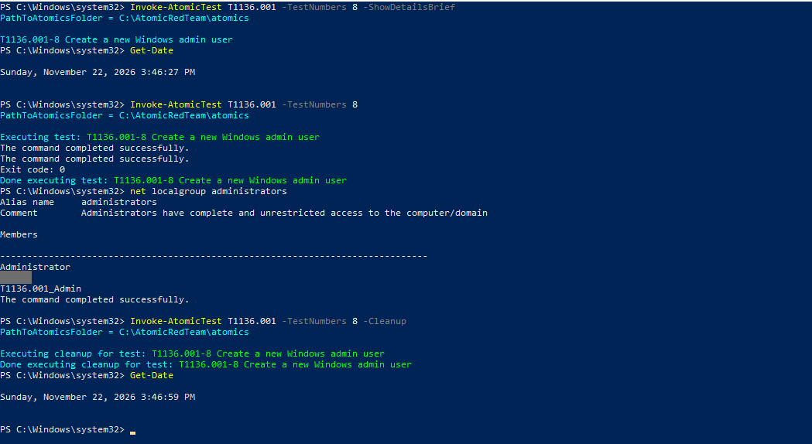
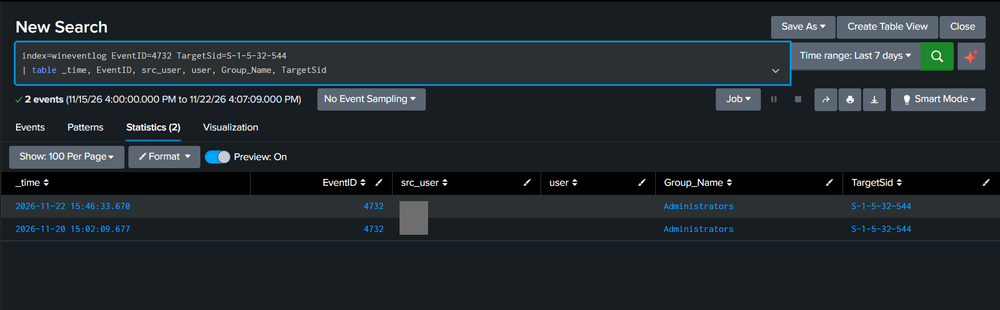

03 · Administrators grubuna üye ekleme
Bir hesabın yerel Administrators grubuna eklenmesi, grubun dilden bağımsız SID'i (S-1-5-32-544) üzerinden.
Saldırı
Invoke-AtomicTest T1136.001 -TestNumbers 8
net localgroup administrators
Invoke-AtomicTest T1136.001 -TestNumbers 8 -CleanupTespit (SPL)
Son sürüm
index=wineventlog EventID=4732 TargetSid=S-1-5-32-544
| table _time, EventID, src_user, user, Group_Name, TargetSidFalse positive'ler ve ayıklama
Bir hesap açılışı Security günlüğünde üç olay bıraktı: 4720 (hesap açıldı), Users grubu için 4732 ve Administrators grubu için 4732. Users'a eklemeyi ilk gördüğümde, saldırganın dikkat çekmemek için hesabı önce Users'a, sonra Administrators'a aldığını düşündüm. Sonra bunu Windows'un kendisinin yaptığını öğrendim: her yeni yerel hesap otomatik olarak Users grubuna ekleniyor. Bütün 4732'lerde alarm verseydim, her hesap açılışı bir alarm üretirdi. Bizim için asıl önemli olan Administrators grubuna eklenmesiydi, çünkü bu gruptakilerin yetkileri çok daha fazla. Kural yalnızca ona bakıyor. Son 7 günde 2 olay çıktı, ikisi de testti.
Düzeltmeler
Grubu adıyla değil SID'iyle aradım. Grup adı bazı makinelerde Türkçe ("Yöneticiler"), bazılarında başka dillerde olabilir, ama Administrators grubunun SID'i (S-1-5-32-544) tüm makinelerde aynı. Önce TargetSid=*-544 yazdım, sonra baştaki jokeri kaldırıp tam SID'e geçtim.
Sysmon yerine Security günlüğüne baktım, çünkü saldırganın tam olarak ne yaptığını görmek istedim. Sysmon yalnızca net.exe'nin çalıştığını gösterir. Hesap PowerShell ile eklenirse net.exe hiç çalışmaz. 4732'yi ise Windows, ekleme hangi yolla yapılırsa yapılsın yazar.
Ekran görüntüleri

T1136.001_Admin hesabı açılıp Administrators'a ekleniyor.

Test kanıtı
| Test | Zaman (VM saati) | Sonuç |
|---|---|---|
| Elle pozitif kontrol | 2026-11-20 15:02:09.677 | Yakalandı |
| T1136.001-8 | 2026-11-22 15:46:33.670 | Yakalandı |
Çıkarılan ders
Windows'un normalde neler yaptığını daha iyi öğrenmem gerekiyor. Böylece bir sonraki analizimde, gördüğüm şeyi saldırganın değil Windows'un yaptığını fark edebilirim. Yeni hesabın Users grubuna alınması bunun iyi bir örneği: ilk bakışta saldırganın bir adımı gibi göründü, ama Windows'un kendi davranışıydı.
Tüm ayrıntılar (veri kaynakları, sınırlamalar, analistin sonraki adımları): detections/03-yonetici-grubuna-ekleme.md